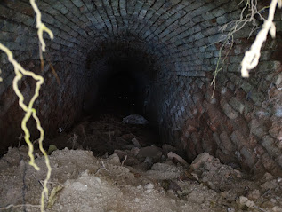
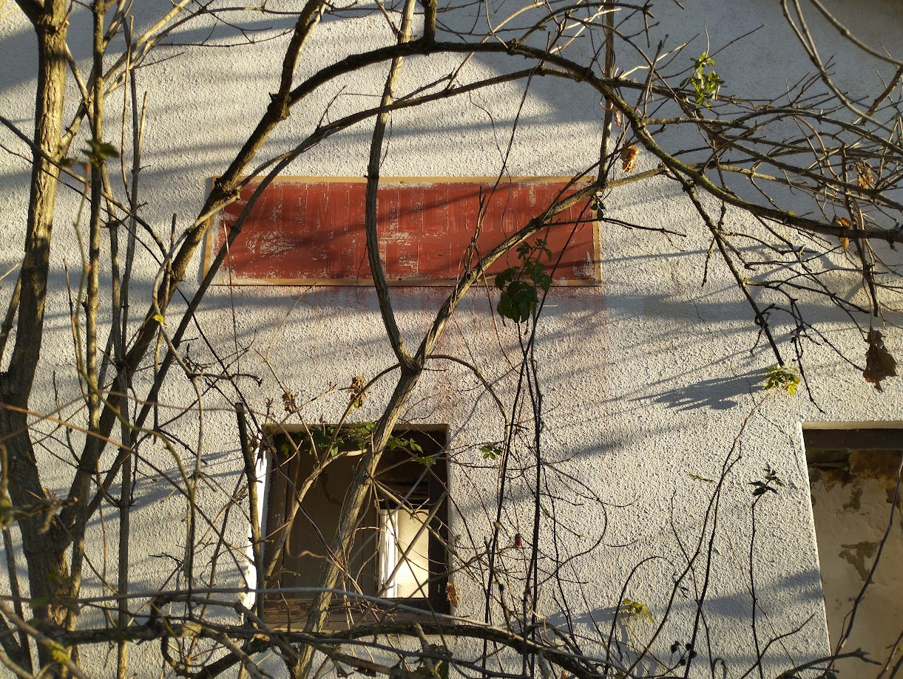
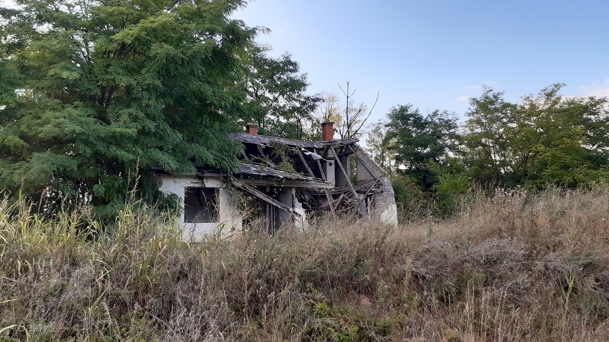
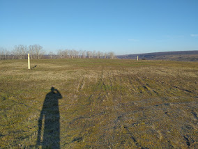
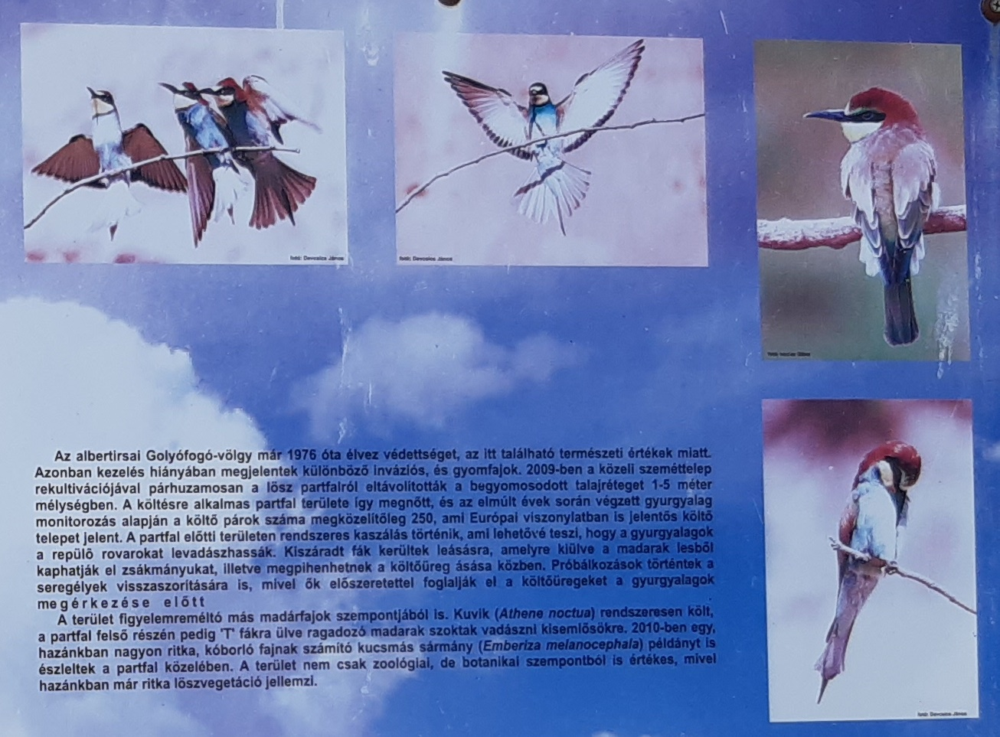
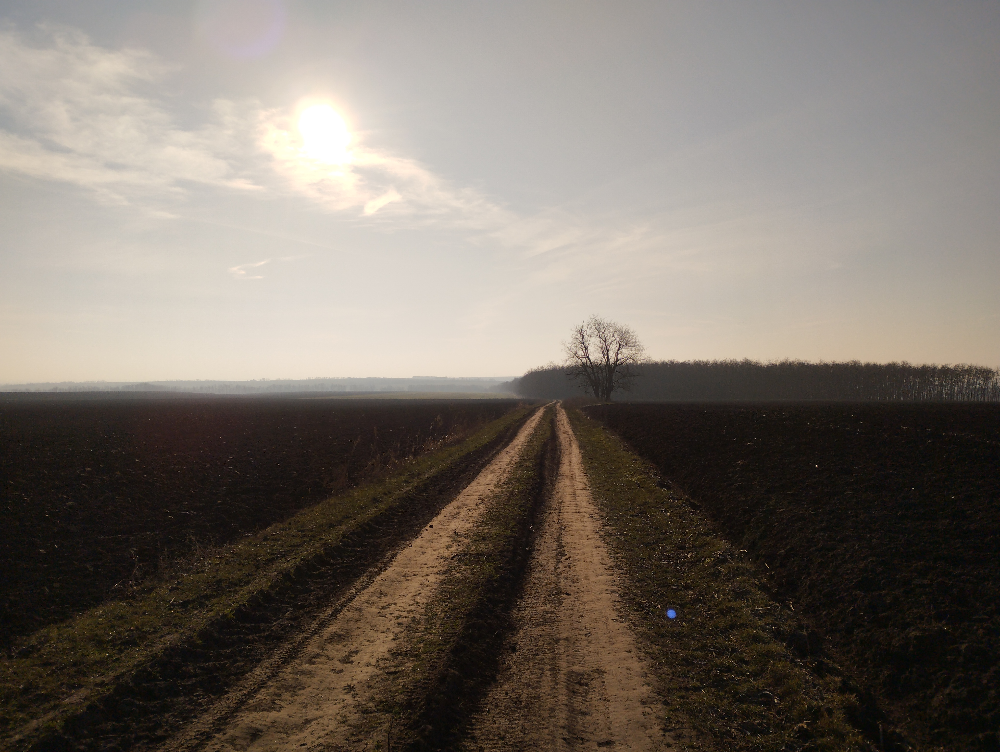

természeti értékek
Kirándulások, túrák, geoláda stb.
TMK - Tápió-menti Kék
Egy elfelejtett túraútvonal
TMK - Tápió-menti Kék
Albertirsáról Tápióbicskéig
Az útvonalnak ez a szakasza dimbes-dombos, 223 m szintemelkedéssel és 240 m szintcsökkenéssel.
A legalacsonyabb pontja 113 m, míg a legmagasabb 195. Szántóföldek és erdősávok váltakoznak benne.
Az útvonal letölthető a GaiaGps-ről ide kattintva, majd lejjebb görgetve az Export lehetőséggel.
Route map for TMK - Albertirsa-Tapiobicske by Zsolt Takacs on plotaroute.com


A tanyánál jobbra fordulunk, és egyenesen haladunk tovább a következő kereszteződésig.


A kereszteződés után a bal oldalon a régi szeméttelep leromlott fogadóépületét találjuk.
Érdemes felmenni a rekultivált szemétlerakó tetejére (habár az útvonal a domb mellett jobbra visz),
több okból is. Egyrészt remek kilátópont,
márészt elgondolkodhatunk rajta, hogy rövid idő alatt mekkora szeméthalmokat gyárt fogyasztói társadalmunk
(1975-ös lévifotó szeméttelepnek még nyoma sincs, csak az év decemberben kezdett üzemelni, és 1991-ben be is zárták, tehát 16 év alatt gyűlt össze ez a halom*).
Harmadrészt pedig megnézhetjük közelről a lezárt szemétlerakó gázkieresztő csöveit.
* az adatszolgáltatás itt található





"Feltehetőleg Alberti község újratelepítése után (1711-től) alakult ki a jelenlegi löszfal. A környékbeli községek (Pilis, Pusztavacs, Mikebuda, Dános puszta és a tanyavilág) lakói hordták innen az agyagot építési célra vert fal és vályogtégla készítéséhez. A korszerűbb építési módszerek elterjedésével nagymértékben csökkent az igény az agyag iránt, így a bányászat rövid időn belül teljesen meg is szűnt (kb. az 1970-es években)." [1]
[1] Erről részletesebb leírás olvasható a Romtúráim blogon.




Az úton továbbhaladva rókalyukak mellett és hangulatos lombsátor alatt,
régi tanyák mementóiként itt maradt téglák közt sétálunk el.
Megmásszuk a dombot, és egy hosszabb egyenes szakasz után, az első lehetőségnél balra fordulunk,
ahol átmegyünk egy erdőn, melynek túloldalán balra tartva maradunk az edeti irányban.


A lejtő végén megművelt domboldalakat látunk, és a kereszteződéshez érve a jobbra fordulunk a sűrűbe, a Kisasszony-völgybe.
Figyelni kell, hogy ne menjünk el a kereszteződés mellett.
A Kisasszony-völgy nevét több népi monda is őrzi. A legvalószínűbb feltevés szerint, a Kisboldogasszony, a Kisasszony
tiszteletére emelt egykori templom viselhette a nevet.*
* forrás: sulinet


Az erdőből kiérve egy nagy rétre érünk, amit kis utacska vágja ketté, ennek a kanyarát
nem követjük, hanem bemegyünk egyenesen az erdőbe.
Készüljünk fel egy kisebb emelkedőre.


Az erdőből kiérve tartsuk az egyenes irányt, majd kövessük az út kanyarulatát jobbra.
Ezután hosszú egyenes szakasz következik, mely szántóföldek között halad. Csodás a kilátás a dombokra
és a köztük húzódó völgyekre.
Az út mellett és távolabb is, változó összetételű erdőcskéket találunk, itt találkozhatunk a környéken
egyébként ritka fenyvessel is.


Löszmélyutakon baktatunk, agyagos foltokban megmaradt tócsákat kerülgetünk, elfordulunk az úttal jobbra,
majd, ahol egy elágazáshoz érkezünk,
balra fordulunk, ahol becsatlakozunk a sárga sávba, melynek a jelzése még kivehető a egyik fán.
Ezzel elindulunk a Hársas-völgy felé, ami Albertirsa utolsó völgye, egyben a legszebb is.
Ha szeretnénk, itt követhetjük a rég benőtt, kikorhadt ősöreg fák közti rövidebb utat, de ez
nehezen járható. Helyette javaslom inkább az út követését, majd a völgybe leérve a jobbra fordulást, ezzel
elkerülve a nehezen jáható kis erdős háromszöget.


Most utunk legkevésbé kitaposott szakasza következik, ahol a szántóföld szélén a kis füves sávon vagy az erdő szélén egy vadcsapáson halad kb. 1 km-t.


Ezután egy erdősávhoz érkezünk, amelyen átkelünk, és innen kiérve az úttal jobbra fordulunk.
Itt láthatunk egy ABK által kihelyezett vércseládát. Elhaladunk egy megrongálódott vadászles
mellett, majd a kerszteződésnéz nem megyünk be az erdőbe, hanem jobbra vesszük az irányt.


A következő szakaszon jobbra-balra nézelődni érdemes, mert a dombok látványa felemelő.
Tőlünk balra egy felhagyott tanya helyét láthatjuk, amelynek már a nyomai sincsenek meg,
csak a szántásból kihagyott, bozótos terület árulkodik arról, hogy valaha itt éltek.
Ne bámészkodjunk el, mert egy jelzetlen út visz le balra a völgybe, erre forduljunk.
Az útirány: Tápióbicske. Itt egy hosszú egyenes szakasz jön, közepén az út vesz egy jobb,
majd egy bal kanyart, de az eredeti irányba haladva felvigy a Golgota-hegyre.


Ahol véget ér az egyenes út, ott balra fordulunk, és haladunk tovább 700 m-t a "Halálkanyar" felé, ami egy jobbra, balra, majd újra jobbra kanyar. Útközben elhaladunk több körbebetonozott geodéziai pont mellett. Figyeljünk, mert 600 m múlva balra kell kanyarodunk, majd utána 1100 m múlva jobbra, végig szántók között haladva.


Innen már egyenes az utunk Tápióbicskéig, időjárástól függően csak a sárral kell megküzdenünk.
Az út szántók és védősávok mellett vezet. A térkép feltüntet több tanyát is, de a valóságban
egyedül a Rudi-tanya felé lehet életnek a nyomát látni. Egyenesen haladunk egészen az elágazásige,
ahol balra folytatjuk utunkat.


Itt újabb hosszú egyenes szakasz következik az Erdő-völgyben, de a távolban már látjuk
Tápióbicske víztornyát, és jobbra a távolban a nagykátai Aranyszarvas Zrt. "Smaragdvárosát".
Hosszú séta után elérkezünk a Labanc-tanáyig (a "Vigyázz, méhek" feliratokról ismerjük fel),
innen már csak bő 2 km van hátra a túrából. Hamarosan beérünk Tápióbicskére, ahol a
temetőnél, ha akarunk, tehetünk egy kitérőt az agyagásóig (vagy ahogy itt hívják, az
"agyigácsóig", ahol egy gyurgyalagtelep, kilátó, budi és wifi is van. Esőházakkal és
padokkal is kedveskednek a fáradt vándornak.
A városba beérve a központban találjuk magunkat, ahol buszra szállhatunk Pánd, Monor,
Gomba vagy Nagykáta felé, egy másik megállóban még Kecskemét és Eger felé is.
Esetleg elkölthetünk egy ebédet a jó értékeléssel és zsúfolt parkolóval rendelkező
Vadász-csárdában,
de ha csak valami gyors harapnivalóra vágyunk a visszaútra, ajánlom az Ady utca sarkán
lévő Ladi pékséget,
ami vasárnap is nyitva tart.